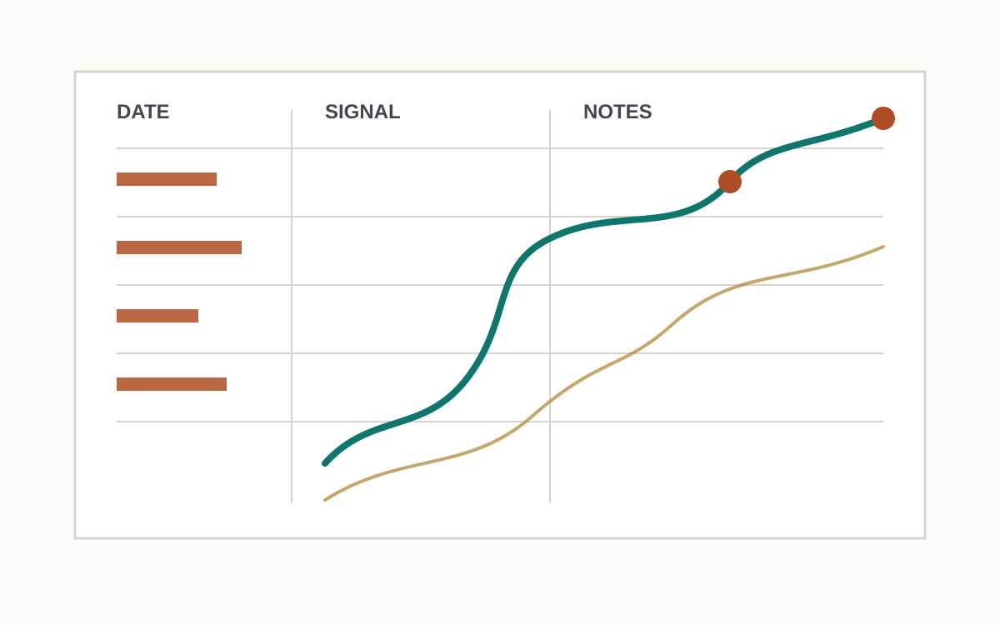
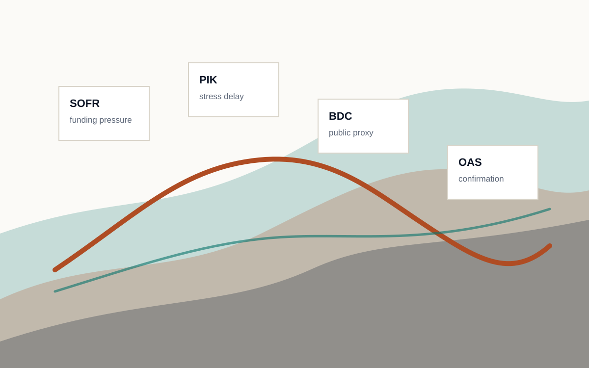

Library
Educational Materials
The current shelf: macro manual, private-credit risk pamphlet, PDFs, chart packs, and the publication standards that hold the house style together.
Project Index
A central table of contents for the published Composite Operator material currently living across separate GitHub Pages projects.
Library
The current shelf: macro manual, private-credit risk pamphlet, PDFs, chart packs, and the publication standards that hold the house style together.

Journal
Finished public market notes and spreadsheet snapshots, organized as a running record rather than a feed.

Archive
A public-safe archive of macro readings translated from transcript work into structured market synthesis.

Pamphlet
An educational SOFR/private-credit risk curve with public proxies, confirmation logic, and scenario charts.
This index points only to published public pages. Private captures, raw transcripts, local runs, and research inputs stay out of the public surface.
Last updated June 14, 2026.